Reviewed UI concept — Japanese sentence-mining input app
34 representative states, all rendered from HTML/CSS at the same 412×915 reference viewport. These are design references, not a complete interactive application or proof of Android accessibility. SPEC.md governs behavior; the HTML/CSS generates the PNGs. Keyboard, long-content, and native accessibility checks remain required.
Built over rounds of iteration in chat: three initial layout directions narrowed to Card & Sheets, then refined around photo/OCR capture, pitch display, audio sourcing, translation, tags, a neutral interface color with pitch as the only chromatic element, and a pass making the review card the persistent ground truth for the whole session. The component system now follows Material Design 3 Expressive (the 2025 update) — a custom color scheme (sumi as primary, pitch hues kept outside it), Expressive's bolder type and shape scale, real segmented buttons and bottom sheets, and inlined Material Symbols icons in place of plain Unicode glyphs. Expressive's richer color palettes and decorative "Hero Moment" shape library are deliberately declined — they conflict with an app used one-handed, mid-trip, dozens of times a session, where color means exactly one thing (pitch). A floating FAB for Send was tried and reverted: it fits starting something new, not submitting a completed review.
Reflected in SPEC.md
The interaction direction is specified; dependency and device verification remain open: on-device OCR, image sharing, and photo/image linking (§3.1, §4.2, §4.8), the review-card-as-ground-truth interaction model and Edit word sheet (§4.1–§4.5, §4.10), furigana's three visual states (§5.4), pick-not-drawn pitch selection and the per-mora block diagram (§5.5), the NHK-first audio chain with recording fully removed (§3.2, §6), automatic Azure-first/local-fallback translation (§7.2), tags-remember-last-note (§7.4), and the settings-vs-build-time reasoning for the Azure key (§4.9). The cumulative rationale for each is in §17's Decision precedence list.
Final-review decisions: readings are automatic and optional everywhere; dictionary misses preserve the sentence for editing or reselection; unexpected errors preserve the saved draft. These supersede the earlier reading-confirmation and discard-on-error policies. See the review record for validation and remaining release gates.
This gets used mid-episode, mid-conversation, mid-trip — one-handed, dozens of times a session, sometimes standing in front of the actual sign, menu, or platform placard. Negative space around the one or two things worth looking at, neutral tone for anything that's a control, color spent in exactly one place: pitch.
The corollary holds: keep the user’s work when recognition or lookup fails. Let them correct text or reselect the target; retaking or starting over remains an explicit choice.
The creation path must work without a network once installed. Bundled linguistic data, OCR, and translation are separate from installed offline TTS voices. Missing optional audio or translation never blocks sending; online services are quality upgrades.
Recorded word audio is preferred where available and licensed, with no guarantee of a selected pitch match unless source metadata verifies it. Translation prefers Azure and falls back to an independent bundled model. Its neutral mark identifies an offline translation; vocabulary marks explain pitch ambiguity, missing pitch, or unverified recording pitch.
One photo is both the OCR source and the card image. Splitting them is one tap away on the review screen — never a separate step up front.
The app selects the matching pattern automatically. "Edit word" reselects the target from the sentence; a pitch pick-list only appears there when the spelling has more than one listed pattern.
Uncertain pitch or a locally-translated sentence gets one small neutral icon, not a caption. Tap it to see why; nothing is explained unasked.
Automatic choice sheets are reserved for OCR or dictionary ambiguity. Editing sheets open on request; error and draft-replacement prompts have their own explicit roles.
Play sits beside each field. Relevant edits refresh generated audio automatically; failed or interrupted items offer Retry. Voice and credentials stay in Settings, not on each note.
Two modes, remembered between sessions, with Settings reachable from either before a first sentence exists. Photo is the default; the same photo doubles as the card image unless split apart later. The camera captures 4:3 — a letterboxed, corner-bracketed frame within the live preview, not the full preview pane — running edge-to-edge to the screen's side edges like a real camera, with no inset or side rounding. Corresponds to SPEC.md §4.2.
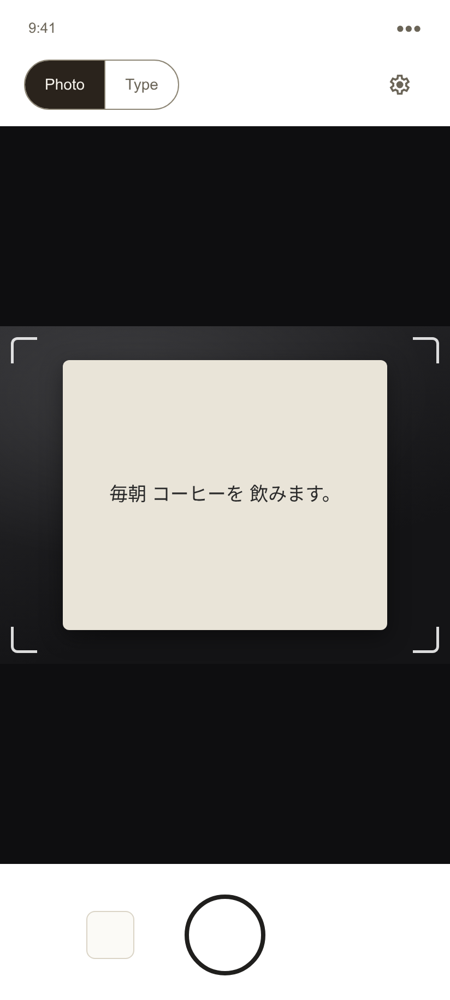
06 — capture-photo
Photo mode, 4:3 letterboxed viewfinder, Settings beside the mode pills
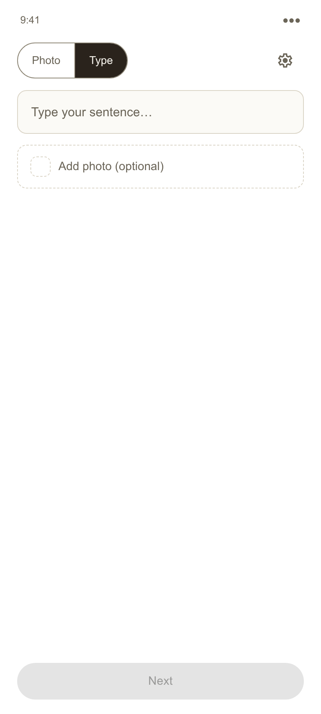
07 — capture-type
Type mode, optional image
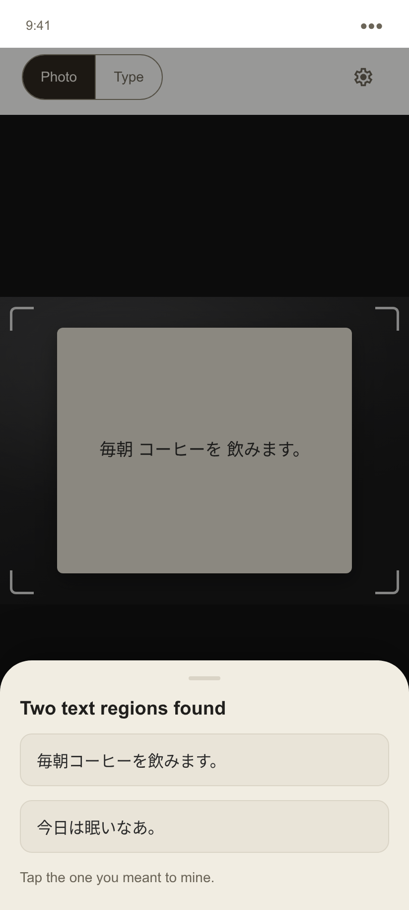
08 — ocr-ambiguity-sheet
Backdrop is the live viewfinder — only if the photo has >1 text region
06b — capture-rotated
Phone rotated clockwise: layout is screen-locked, like a normal camera app — only the mode label text and the Settings icon counter-rotate to stay upright; frame, shutter, and thumbnail don't move
One screen for text and target together — no separate OCR-confirm step. A sheet interrupts only when the dictionary itself is ambiguous. Corresponds to §4.3.
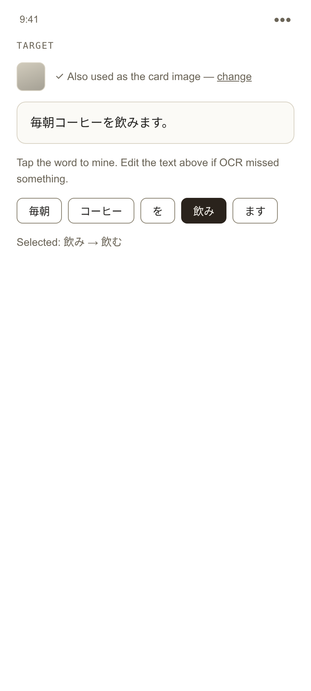
09 — target-text
Editable sentence + token chips
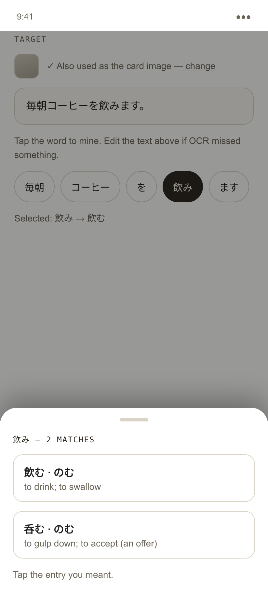
10 — dictionary-ambiguity-sheet
Complete Target screen remains beneath the sheet; only if >1 JMdict entry matches
Errors preserve saved work. A dictionary miss returns to text/target editing; an unexpected error returns to the draft without blindly retrying a submission. Corresponds to §4.10.
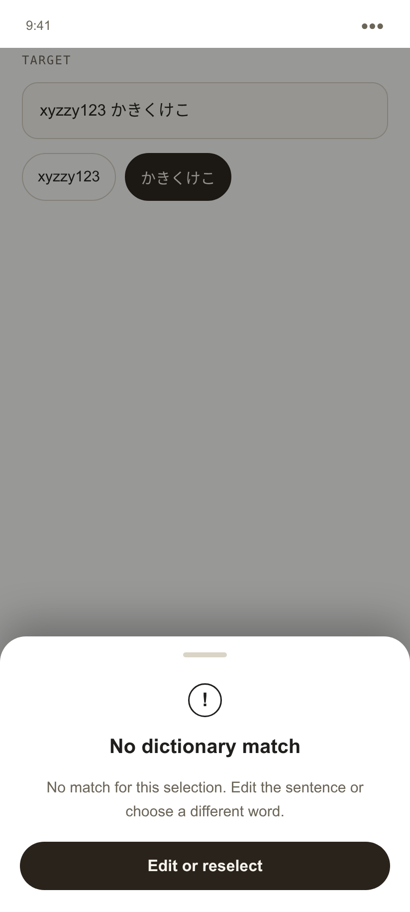
11 — dictionary-lookup-failed
No match for the selected span — edit or reselect without discarding
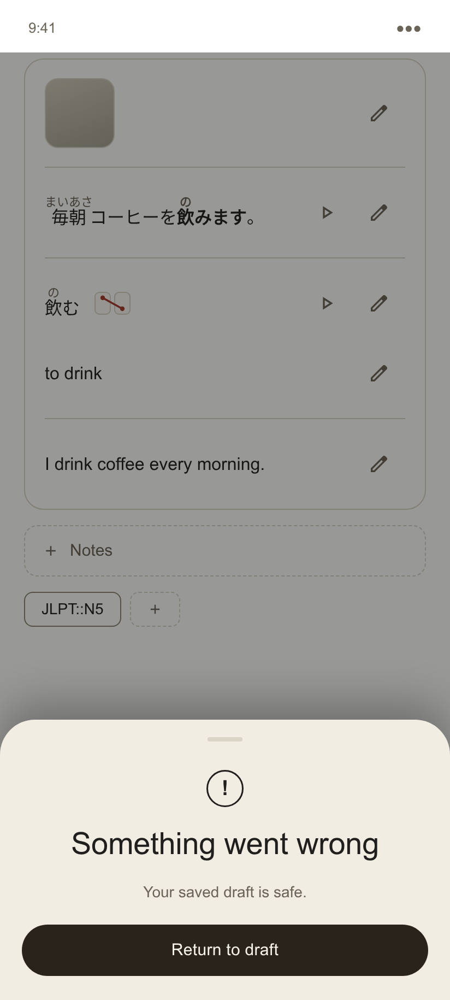
12 — generic-error-sheet
Saved draft retained; return without destructive restart. Specific submission/permission failures retain their own handling
Once a target resolves, this card is the ground truth for the rest of the session — not one screen among several, the screen. Generating fields, flagged fields, sending, success, a blocked duplicate, and an uncertain outcome are all this same card with only its bottom action area (or a small popover) changing; nothing here ever swaps in an unrelated full-screen layout. Deck and note type are configured only in Settings, never selected or redisplayed here. Corresponds to §4.1, §4.5–§4.6, §9.4–§9.5.
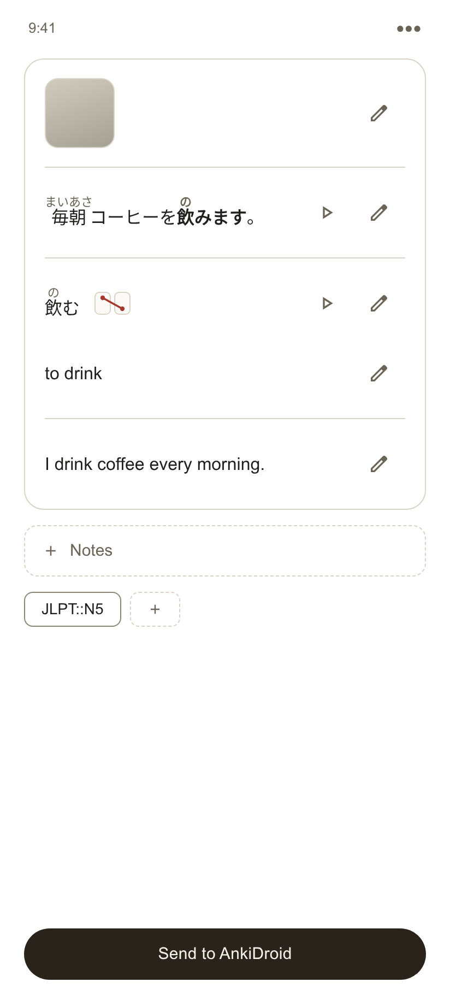
13 — review-card
Default, nothing flagged, nothing pending
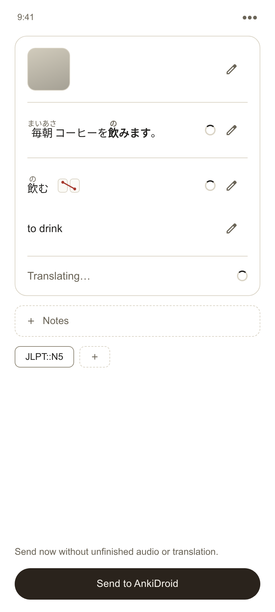
14 — review-card-generating
Spinners on the online-sourced fields only — furigana/definition/pitch are local and already resolved
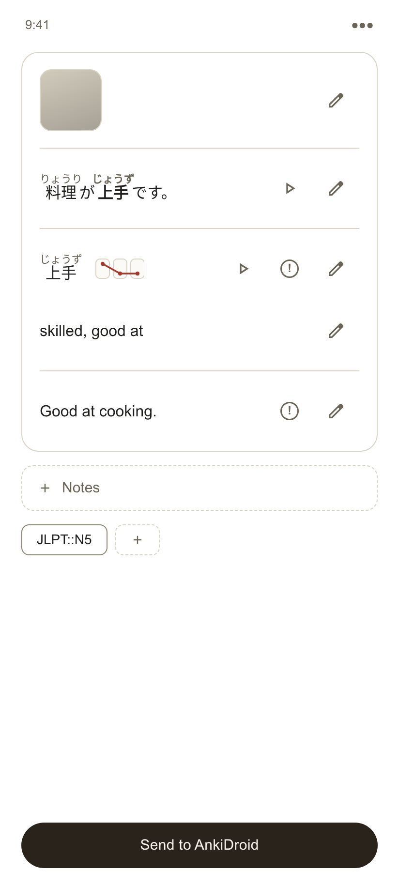
15 — review-card-flags
Ambiguous pitch + local-fallback translation, together — flag and edit are always two separate icons
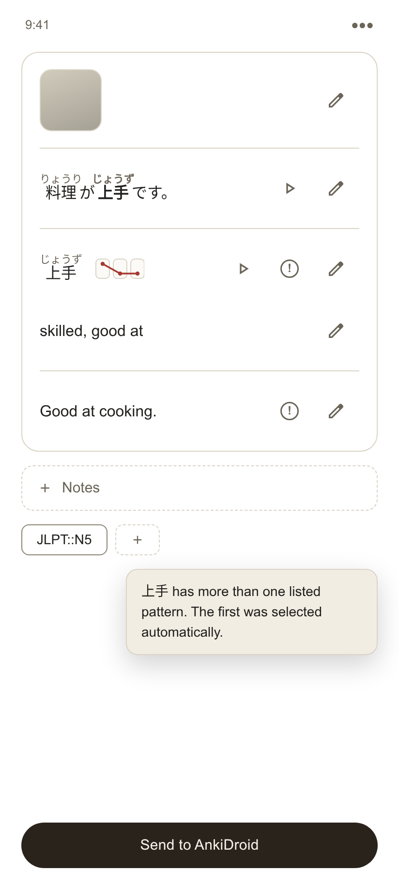
16 — flag-explainer
Tapping the flag (not the pencil) explains the pitch ambiguity; Send remains available and the pencil opens Edit word
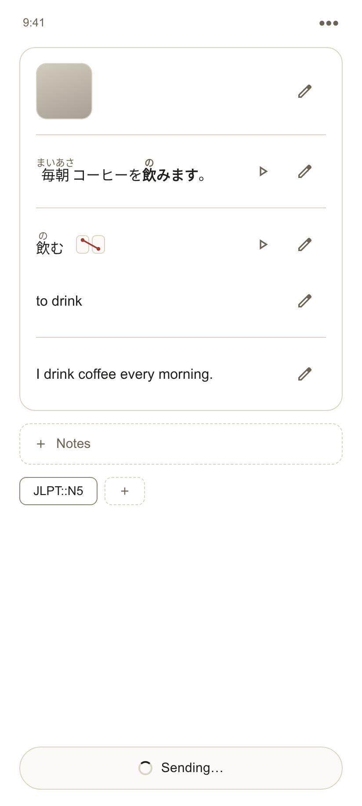
17 — sending
Full card unchanged; only the button becomes a spinner
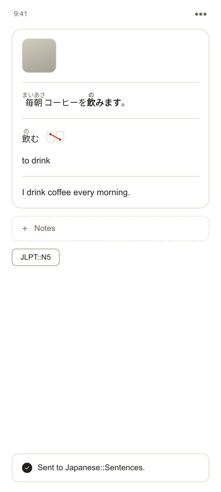
18 — success
Filled checkmark and Notes remain on the same card; a blank capture screen follows immediately after
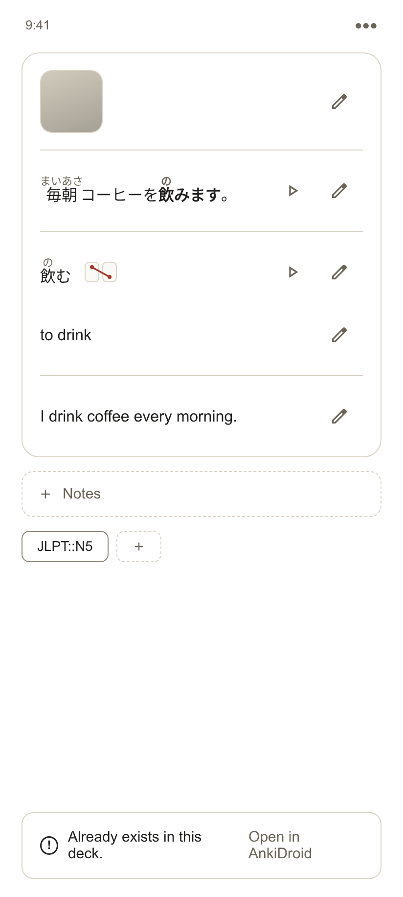
19 — duplicate-blocked
§9.3 duplicate rule — card stays as submitted; Open in AnkiDroid opens the existing duplicate there, not an internal review
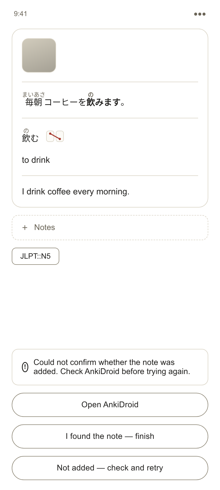
20 — send-uncertain
§9.5 unresolved outcome after reconciliation — inspect AnkiDroid before a checked retry
Sentence (JA) template's own palette) are the only saturated color anywhere. Even "OK" vs. "needs a look" (screens 18 vs. 19) is shape — filled circle vs. outline circle — never a green/red pair. See color, think pitch.Image, vocabulary, definition, and tags use bounded sheets over the complete card. Notes and translation edit inline; sentence editing returns to Target. No manual lemma/reading field is provided. Dictionary misses preserve the draft for text editing or reselection (§4.10). Corresponds to §4.5.
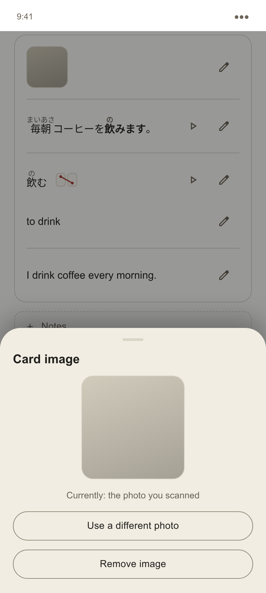
21 — change-image-sheet
Swap or remove the linked photo
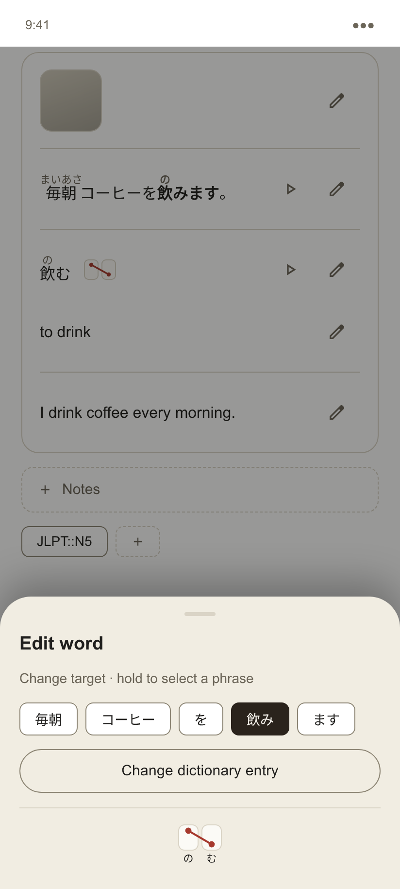
22 — edit-word-sheet-single
Retarget chips + one pitch match
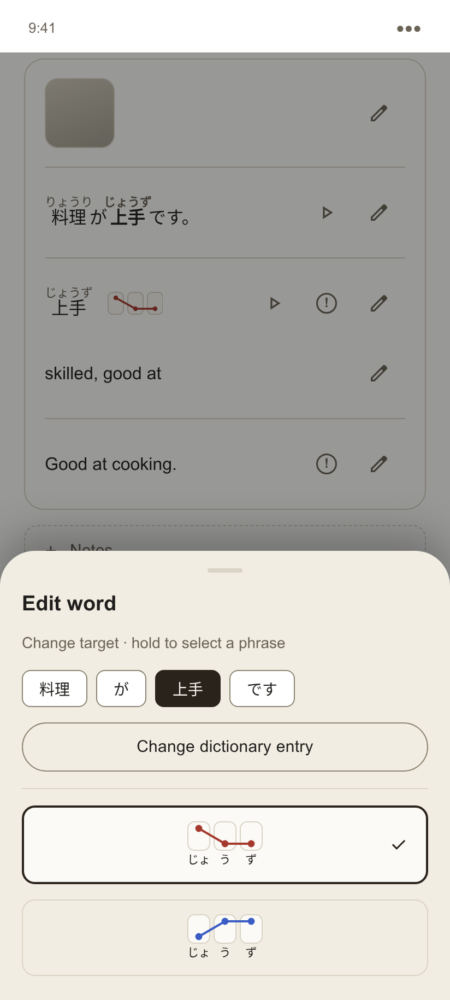
23 — edit-word-sheet-multi
Same sheet, two listed patterns
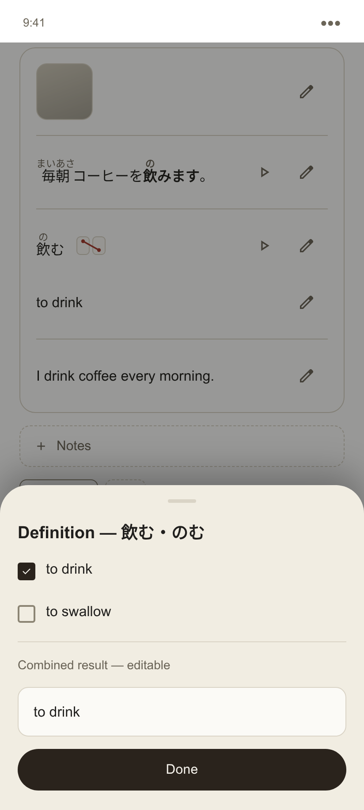
24 — edit-definition-sheet
Senses + editable combined text
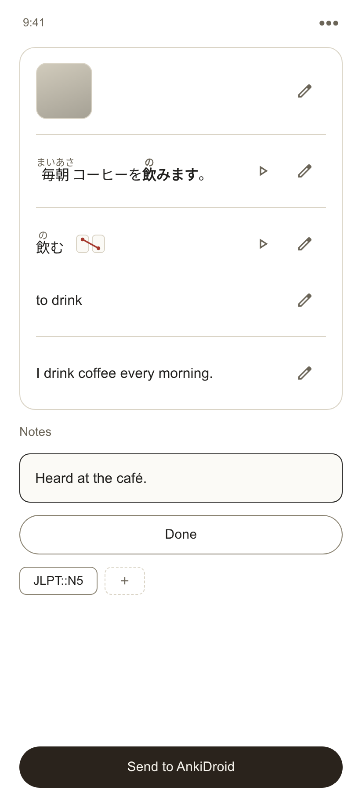
25 — add-notes-inline
Not a sheet — expands in place
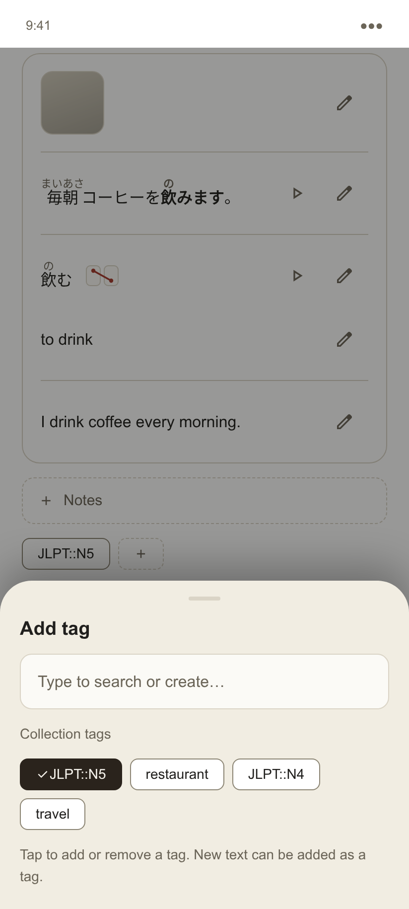
26 — add-tag-sheet
Collection tags, add/remove, or create
Not an app screen. Documents the two scales and four pattern hues used throughout §5.5 — reused verbatim wherever pitch appears.
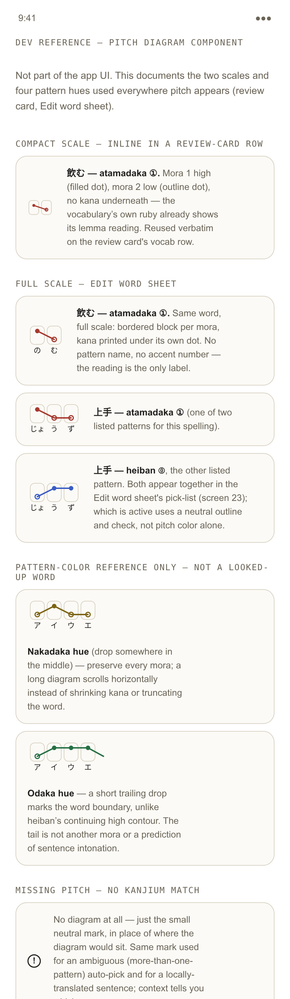
00 — pitch-component
Compact + full scale, all four hues, missing state
Compact scale (card row, screens 13/15): small bordered block per mora, no kana underneath — the vocabulary's ruby shows its lemma reading, which may differ from the inflected sentence target. Full scale (Edit word sheet, screens 22–23): same blocks, larger, kana printed beneath each dot, since nothing else on that sheet shows the reading. Both: one color for the whole diagram per pattern type; high/low is the dot's vertical position plus the contour line, nothing else — a filled dot is a normal mora, a hollow dot is a nasal one (鼻濁音), independent of whether that mora is high or low. Visible numeric/name labels are omitted, but TalkBack announces the reading and drop. A neutral check and outline indicate selection; a trailing contour cue distinguishes a final-mora drop from no drop without relying on color. Long diagrams scroll rather than losing morae.
The nasal/normal fill is release-gated: the pinned Kanjium accents.txt carries pitch positions only, no nasal marker, so every diagram renders all-filled until a nasal-annotated source is selected and pinned (SPEC.md §15 gate 14, §17). Screen 00's 音楽 example is illustrative, not drawn from live app data.
Automatic readings have three treatments: kana-only text stays plain, resolved kanji receive ruby, and unresolved kanji receive a dotted underline without invented ruby. All unresolved readings—including the target and vocabulary—are optional for export. Screen 13 demonstrates resolved ruby; the examples below include the missing state.
Kana only — nothing to annotate, shown plain.
Unresolved, best-effort — a dotted underline on any unresolved kanji span. Never blocks Send.
Resolved — ruby, same as the sentence row in the review card.
There are no manual reading or “leave unannotated” controls. Editing the text, target, or dictionary entry reruns automatic analysis. Missing readings export as original text; dictionary resolution and a definition are still required.
The mode switch from screen 06 carries most of the decision: Photo mode links the scan to the card image by default, with one tap out (screen 21); Type mode skips the camera and offers the image as a plain optional add (screen 07). Image sharing from another app (screen 04) is a third on-ramp, folding into the same Photo-mode pipeline. Corresponds to §3.1, §4.2, §4.8.
What's configured once and rarely revisited — note type, deck, cloud/on-device audio and translation config, cache, and Sources & licenses at the very bottom of this screen rather than a separate top-level button. Corresponds to §4.9.
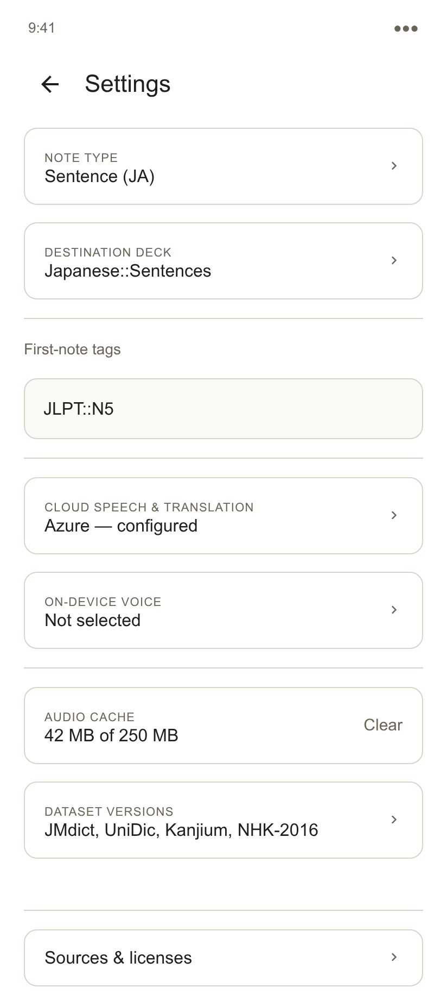
27 — settings-main
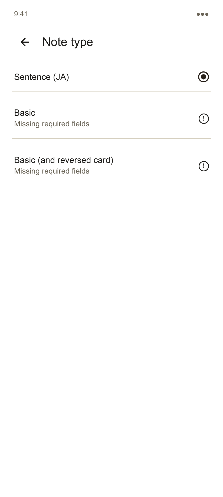
28 — settings-note-type-picker
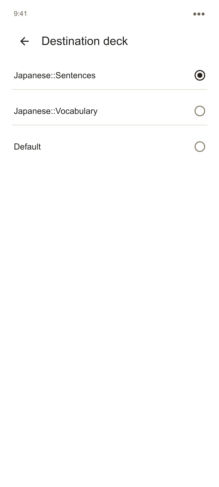
29 — settings-deck-picker
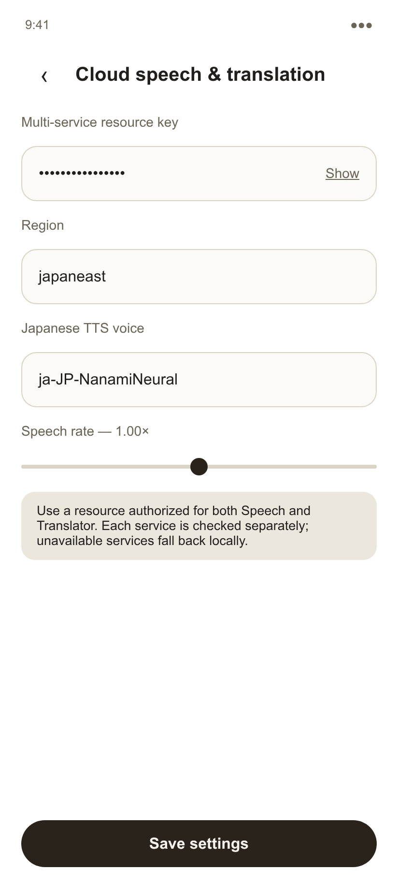
30 — settings-azure
TTS + Translator, validated multi-service resource
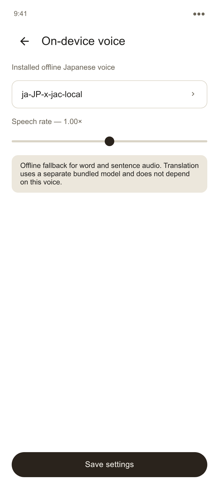
31 — settings-ondevice
Offline audio only; translation has an independent model
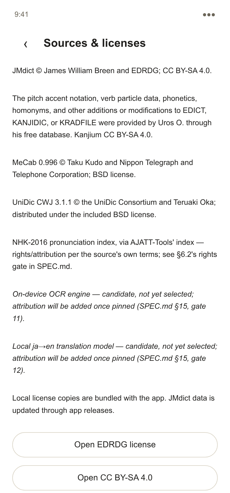
32 — settings-licenses
Existing copy + 2 new candidate dependencies
Screen 30 is also where the runtime-vs-build-time question for the Azure key was settled: entered here and Keystore-encrypted at rest, not compiled into the APK. A build-time secret would sit in APK resources — already prohibited for credentials (§11) — and can't be a fixed, publicly reproducible Nix input (§12) without either leaking it or breaking byte-identical rebuilds. Runtime entry also survives key rotation without a rebuild.
Before export is possible (§4.8), plus the incoming-share and interrupted-draft cases (§4.2, §4.8, §10.1).
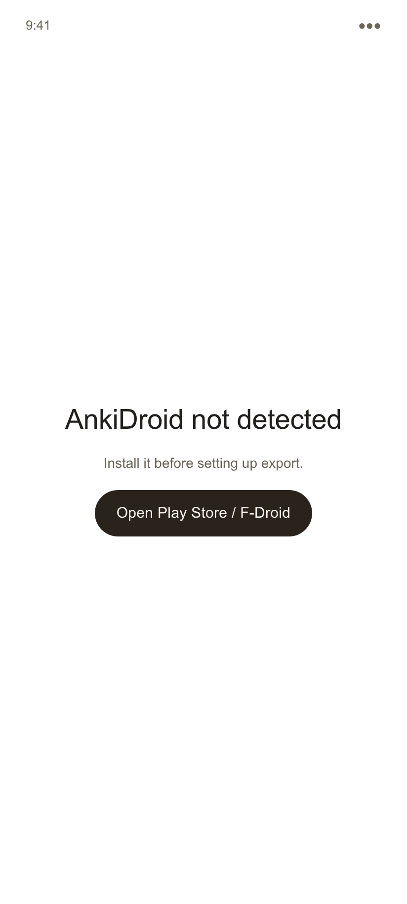
01 — setup-not-installed
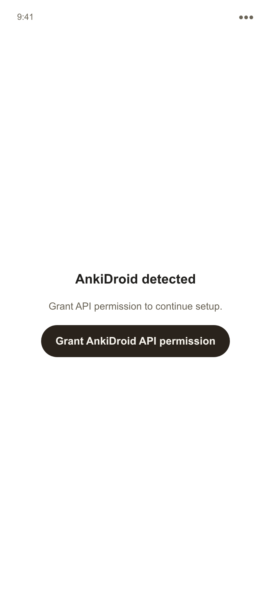
02 — setup-permission
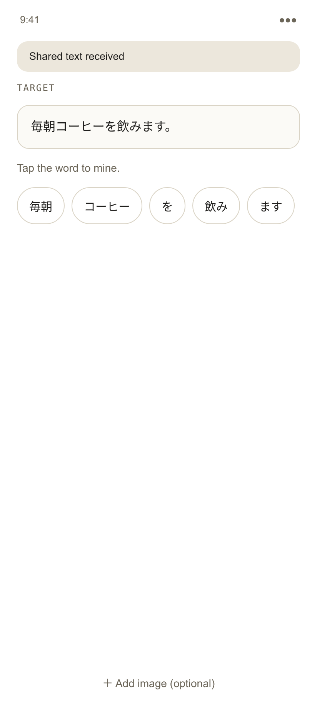
03 — shared-text-received
Android text share, no target guessed
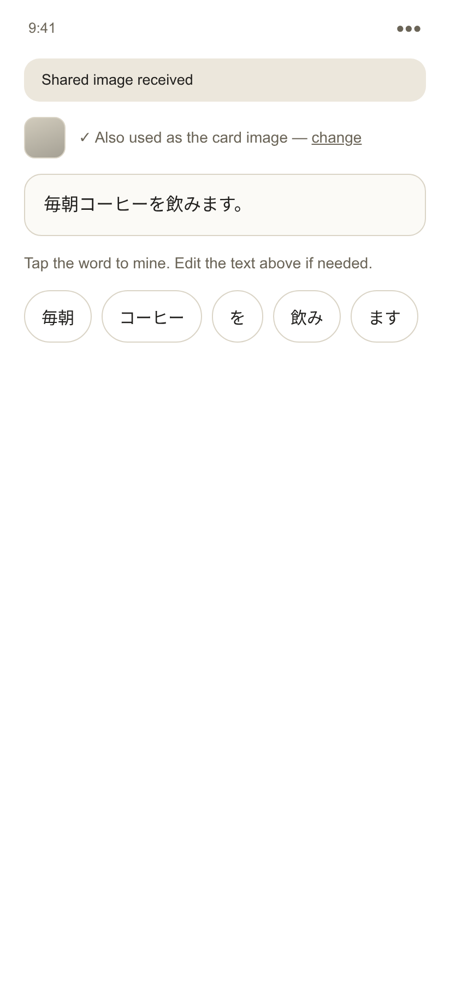
04 — shared-image-received
Android image share, folds into the Photo pipeline
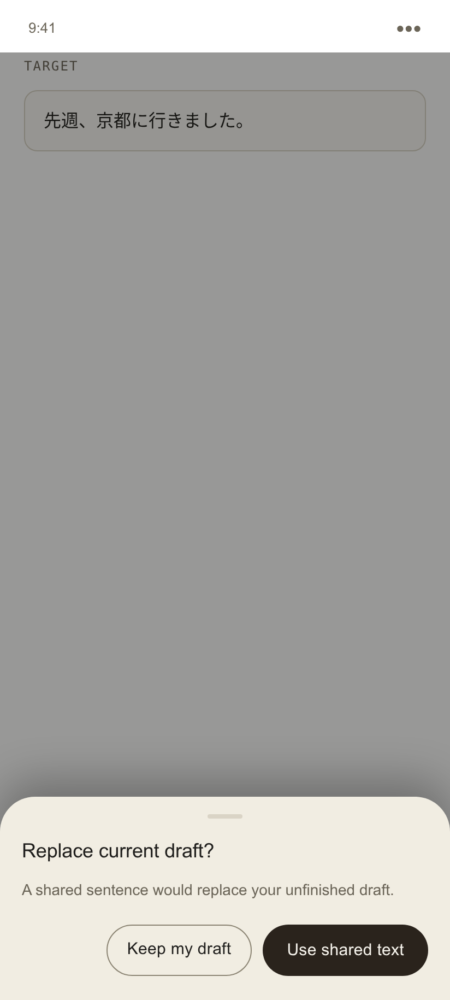
05 — draft-restore-prompt